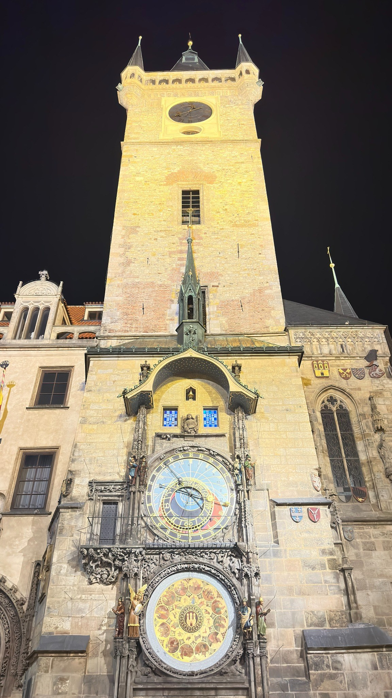
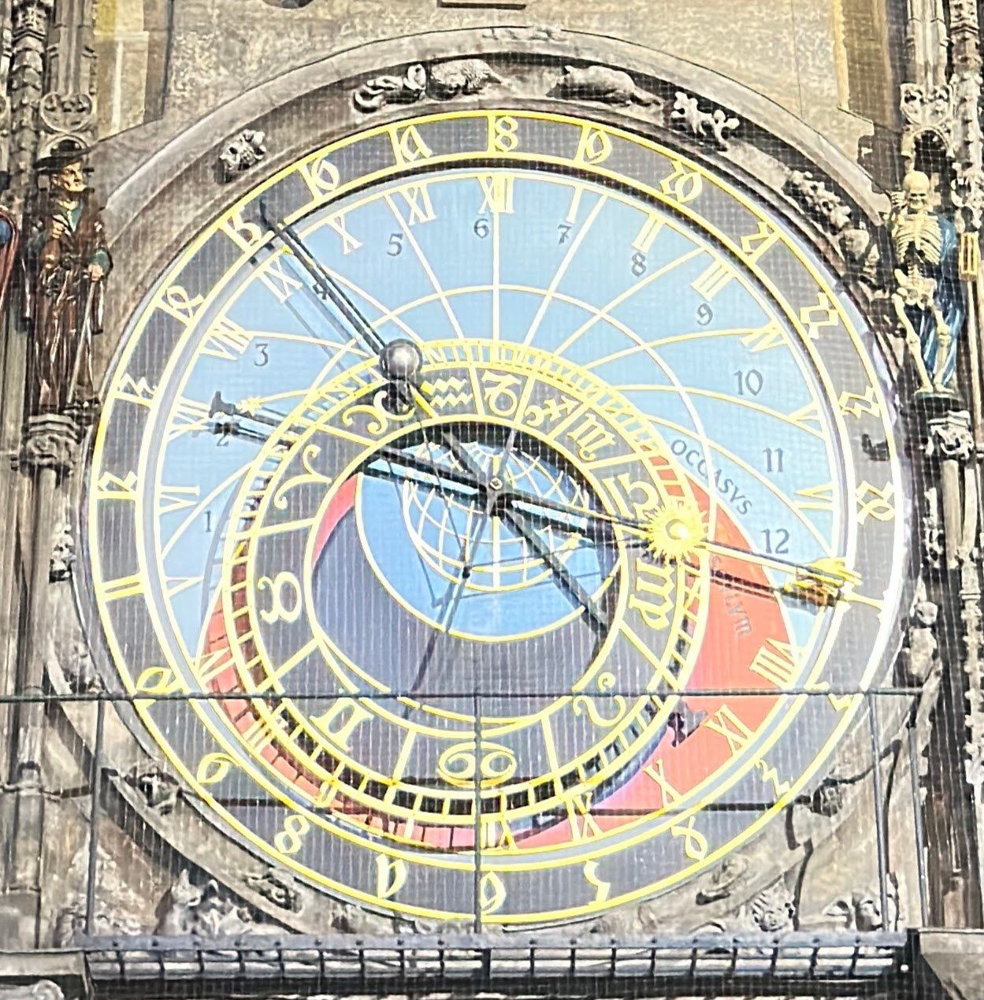

From a visit to Prague to a clock you can explore
I visited Prague in September 2026 and became interested in what its astronomical clock was actually showing. I wanted to understand the mechanism well enough to build a working model of my own.
This project was inspired by the Prague Astronomical Clock, also known as the Prague Orloj, on the Old Town Hall in Old Town Square. The interactive model lets you explore how its astronomical dial works by changing the time, location, and simulation speed.
The real clock in Prague


The clock stands on the Old Town Hall tower overlooking Old Town Square in Prague, the capital of the Czech Republic. The hall was the seat of the Old Town’s government. Its medieval astronomical clock, called the Orloj, dates to 1410.
In the tower photograph, the astronomical dial sits above a separate calendar dial. Visitors gather for the procession of apostle figures in the windows above them.


The close-up shows the astronomical dial—the part recreated here. Its hands and rings show time and the changing positions of the Sun and Moon.
This display keeps moving long after the crowd has gone. The project focuses on that quieter mechanism: a view of the sky expressed through moving hands and rings.
More about the landmark: Prague City Tourism.
The questions behind the project
I’m a controls engineer, so the relationships between the moving pieces were part of the appeal. Why is the zodiac ring offset? Why does the Sun move toward and away from the center? How can one clock show ordinary time, hours counted from sunset, and twelve daylight hours that change length with the seasons?
Standing in the square, I noticed people looking up at the clock and trying to understand it. They could usually figure out what time it was, but that was about it. I realized that seeing the dial at one frozen moment gives you very little sense of how it works. Its relationships become much clearer when you watch the parts move.
Most visitors don’t have hours to stand in the square watching the clock—especially while keeping an eye on their pockets. So I wanted to give people a way to choose different times of day and different times of year, then speed things up and watch the hands and rings move. A whole day or a change of seasons becomes something you can explore in minutes. Then came another question: what would the dial look like where I live, or in another city?
First the mathematics, then the model
The project began with calculations in Excel. I worked through the equator and tropic circles, the horizon and twilight boundaries, the zodiac geometry, and the positions of the Sun and Moon. A spreadsheet macro advanced the date and time so I could watch the calculations change.
I built the clock’s individual pieces in Blender, with separate objects for the parts that needed to move. The model was exported to GLB so the browser could display the geometry and artwork.
A clock you can explore
I built a webpage to bring the clock to life and make it easy to explore. You can watch it run in real time, choose a date, or speed through a day or a year. Changing the location shows how the horizon, twilight regions, and unequal daylight hours depend on where you are.
The model includes the hour scales, the Sun and Moon, the zodiac ring and star pointer, and an Earth atlas centered on the selected location. A daylight-saving option lets the ordinary hour scale follow local civil time.
A clock for understanding
The “What am I looking at?” guide connects each part to its current reading. You can follow the Sun across the daylight hours, compare a summer day with a winter day, or watch the sunset scale reach the start of a new day.
This is an independent educational interpretation of the astronomical dial, rather than a complete reproduction of the Prague clock. It omits the apostles and other mechanical displays. The astronomy is approximate, some visual details are my own, and the current model supports latitudes from 1° to 66° north. It is not affiliated with the City of Prague or the clock’s operators.
Questions about the clock?
You can reach me at WorldAstronomicalClock@gmail.com.